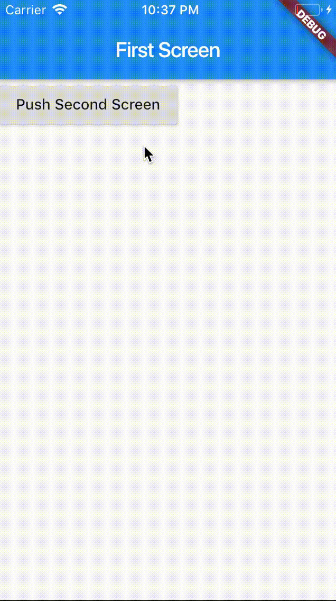
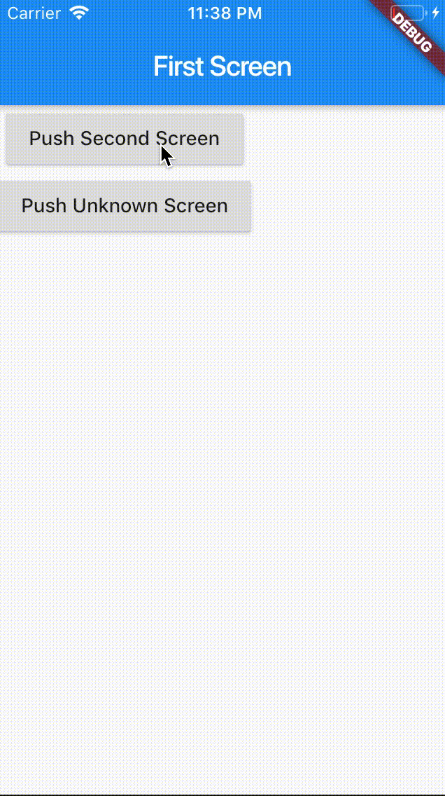

- 00 开篇词 为什么每一位大前端从业者都应该学习Flutter？.md
- 01 预习篇 · 从0开始搭建Flutter工程环境.md
- 02 预习篇 · Dart语言概览.md
- 03 深入理解跨平台方案的历史发展逻辑.md
- 04 Flutter区别于其他方案的关键技术是什么？.md
- 05 从标准模板入手，体会Flutter代码是如何运行在原生系统上的.md
- 06 基础语法与类型变量：Dart是如何表示信息的？.md
- 07 函数、类与运算符：Dart是如何处理信息的？.md
- 08 综合案例：掌握Dart核心特性.md
- 09 Widget，构建Flutter界面的基石.md
- 10 Widget中的State到底是什么？.md
- 11 提到生命周期，我们是在说什么？.md
- 12 经典控件（一）：文本、图片和按钮在Flutter中怎么用？.md
- 13 经典控件（二）：UITableView_ListView在Flutter中是什么？.md
- 14 经典布局：如何定义子控件在父容器中排版的位置？.md
- 15 组合与自绘，我该选用何种方式自定义Widget？.md
- 16 从夜间模式说起，如何定制不同风格的App主题？.md
- 17 依赖管理（一）：图片、配置和字体在Flutter中怎么用？.md
- 18 依赖管理（二）：第三方组件库在Flutter中要如何管理？.md
- 19 用户交互事件该如何响应？.md
- 20 关于跨组件传递数据，你只需要记住这三招.md
- 21 路由与导航，Flutter是这样实现页面切换的.md
- 22 如何构造炫酷的动画效果？.md
- 23 单线程模型怎么保证UI运行流畅？.md
- 24 HTTP网络编程与JSON解析.md
- 25 本地存储与数据库的使用和优化.md
- 26 如何在Dart层兼容Android_iOS平台特定实现？（一）.md
- 27 如何在Dart层兼容Android_iOS平台特定实现？（二）.md
- 28 如何在原生应用中混编Flutter工程？.md
- 29 混合开发，该用何种方案管理导航栈？.md
- 30 为什么需要做状态管理，怎么做？.md
- 31 如何实现原生推送能力？.md
- 32 适配国际化，除了多语言我们还需要注意什么_.md
- 33 如何适配不同分辨率的手机屏幕？.md
- 34 如何理解Flutter的编译模式？.md
- 35 Hot Reload是怎么做到的？.md
- 36 如何通过工具链优化开发调试效率？.md
- 37 如何检测并优化Flutter App的整体性能表现？.md
- 38 如何通过自动化测试提高交付质量？.md
- 39 线上出现问题，该如何做好异常捕获与信息采集？.md
- 40 衡量Flutter App线上质量，我们需要关注这三个指标.md
- 41 组件化和平台化，该如何组织合理稳定的Flutter工程结构？.md
- 42 如何构建高效的Flutter App打包发布环境？.md
- 43 如何构建自己的Flutter混合开发框架（一）？.md
- 44 如何构建自己的Flutter混合开发框架（二）？.md
- 特别放送 温故而知新，与你说说专栏的那些思考题.md
- 结束语 勿畏难，勿轻略.md
21 路由与导航，Flutter是这样实现页面切换的
你好，我是陈航。
在上一篇文章中，我带你一起学习了如何在Flutter中实现跨组件数据传递。其中，InheritedWidget适用于子Widget跨层共享父Widget数据的场景，如果子Widget还需要修改父Widget数据，则需要和State一起配套使用。而Notification，则适用于父Widget监听子Widget事件的场景。对于没有父子关系的通信双方，我们还可以使用EventBus实现基于订阅/发布模式的机制实现数据交互。
如果说UI框架的视图元素的基本单位是组件，那应用程序的基本单位就是页面了。对于拥有多个页面的应用程序而言，如何从一个页面平滑地过渡到另一个页面，我们需要有一个统一的机制来管理页面之间的跳转，通常被称为路由管理或导航管理。
我们首先需要知道目标页面对象，在完成目标页面初始化后，用框架提供的方式打开它。比如，在Android/iOS中我们通常会初始化一个Intent或ViewController，通过startActivity或pushViewController来打开一个新的页面；而在React中，我们使用navigation来管理所有页面，只要知道页面的名称，就可以立即导航到这个页面。
其实，Flutter的路由管理也借鉴了这两种设计思路。那么，今天我们就来看看，如何在一个Flutter应用中管理不同页面的命名和过渡。
路由管理
在Flutter中，页面之间的跳转是通过Route和Navigator来管理的：
- Route是页面的抽象，主要负责创建对应的界面，接收参数，响应Navigator打开和关闭；
- 而Navigator则会维护一个路由栈管理Route，Route打开即入栈，Route关闭即出栈，还可以直接替换栈内的某一个Route。
而根据是否需要提前注册页面标识符，Flutter中的路由管理可以分为两种方式：
- 基本路由。无需提前注册，在页面切换时需要自己构造页面实例。
- 命名路由。需要提前注册页面标识符，在页面切换时通过标识符直接打开新的路由。
接下来，我们先一起看看基本路由这种管理方式吧。
基本路由
在Flutter中，基本路由的使用方法和Android/iOS打开新页面的方式非常相似。要导航到一个新的页面，我们需要创建一个MaterialPageRoute的实例，调用Navigator.push方法将新页面压到堆栈的顶部。
其中，MaterialPageRoute是一种路由模板，定义了路由创建及切换过渡动画的相关配置，可以针对不同平台，实现与平台页面切换动画风格一致的路由切换动画。
而如果我们想返回上一个页面，则需要调用Navigator.pop方法从堆栈中删除这个页面。
下面的代码演示了基本路由的使用方法：在第一个页面的按钮事件中打开第二个页面，并在第二个页面的按钮事件中回退到第一个页面：
class FirstScreen extends StatelessWidget {
@override
Widget build(BuildContext context) {
return RaisedButton(
//打开页面
onPressed: ()=> Navigator.push(context, MaterialPageRoute(builder: (context) => SecondScreen()));
);
}
}
class SecondPage extends StatelessWidget {
@override
Widget build(BuildContext context) {
return RaisedButton(
// 回退页面
onPressed: ()=> Navigator.pop(context)
);
}
}
运行一下代码，效果如下：

图1 基本路由示例
可以看到，基本路由的使用还是比较简单的。接下来，我们再看看命名路由的使用方法。
命名路由
基本路由使用方式相对简单灵活，适用于应用中页面不多的场景。而在应用中页面比较多的情况下，再使用基本路由方式，那么每次跳转到一个新的页面，我们都要手动创建MaterialPageRoute实例，初始化页面，然后调用push方法打开它，还是比较麻烦的。
所以，Flutter提供了另外一种方式来简化路由管理，即命名路由。我们给页面起一个名字，然后就可以直接通过页面名字打开它了。这种方式简单直观，与React中的navigation使用方式类似。
要想通过名字来指定页面切换，我们必须先给应用程序MaterialApp提供一个页面名称映射规则，即路由表routes，这样Flutter才知道名字与页面Widget的对应关系。
路由表实际上是一个Map
下面的代码演示了命名路由的使用方法：在MaterialApp完成了页面的名字second_page及页面的初始化方法注册绑定，后续我们就可以在代码中以second_page这个名字打开页面了：
MaterialApp(
...
//注册路由
routes:{
"second_page":(context)=>SecondPage(),
},
);
//使用名字打开页面
Navigator.pushNamed(context,"second_page");
可以看到，命名路由的使用也很简单。
不过由于路由的注册和使用都采用字符串来标识，这就会带来一个隐患：如果我们打开了一个不存在的路由会怎么办？
也许你会想到，我们可以约定使用字符串常量去定义、使用路由，但我们无法避免通过接口数据下发的错误路由标识符场景。面对这种情况，无论是直接报错或是不响应错误路由，都不是一个用户体验良好的解决办法。
更好的办法是，对用户进行友好的错误提示，比如跳转到一个统一的NotFoundScreen页面，也方便我们对这类错误进行统一收集、上报。
在注册路由表时，Flutter提供了UnknownRoute属性，我们可以对未知的路由标识符进行统一的页面跳转处理。
下面的代码演示了如何注册错误路由处理。和基本路由的使用方法类似，我们只需要返回一个固定的页面即可。
MaterialApp(
...
//注册路由
routes:{
"second_page":(context)=>SecondPage(),
},
//错误路由处理，统一返回UnknownPage
onUnknownRoute: (RouteSettings setting) => MaterialPageRoute(builder: (context) => UnknownPage()),
);
//使用错误名字打开页面
Navigator.pushNamed(context,"unknown_page");
运行一下代码，可以看到，我们的应用不仅可以处理正确的页面路由标识，对错误的页面路由标识符也可以统一跳转到固定的错误处理页面了。

图2 命名路由示例
页面参数
与基本路由能够精确地控制目标页面初始化方式不同，命名路由只能通过字符串名字来初始化固定目标页面。为了解决不同场景下目标页面的初始化需求，Flutter提供了路由参数的机制，可以在打开路由时传递相关参数，在目标页面通过RouteSettings来获取页面参数。
下面的代码演示了如何传递并获取参数：使用页面名称second_page打开页面时，传递了一个字符串参数，随后在SecondPage中，我们取出了这个参数，并将它展示在了文本中。
//打开页面时传递字符串参数
Navigator.of(context).pushNamed("second_page", arguments: "Hey");
class SecondPage extends StatelessWidget {
@override
Widget build(BuildContext context) {
//取出路由参数
String msg = ModalRoute.of(context).settings.arguments as String;
return Text(msg);
}
}
除了页面打开时需要传递参数，对于特定的页面，在其关闭时，也需要传递参数告知页面处理结果。
比如在电商场景下，我们会在用户把商品加入购物车时，打开登录页面让用户登录，而在登录操作完成之后，关闭登录页面返回到当前页面时，登录页面会告诉当前页面新的用户身份，当前页面则会用新的用户身份刷新页面。
与Android提供的startActivityForResult方法可以监听目标页面的处理结果类似，Flutter也提供了返回参数的机制。在push目标页面时，可以设置目标页面关闭时监听函数，以获取返回参数；而目标页面可以在关闭路由时传递相关参数。
下面的代码演示了如何获取参数：在SecondPage页面关闭时，传递了一个字符串参数，随后在上一页监听函数中，我们取出了这个参数，并将它展示了出来。
class SecondPage extends StatelessWidget {
@override
Widget build(BuildContext context) {
return Scaffold(
body: Column(
children: <Widget>[
Text('Message from first screen: $msg'),
RaisedButton(
child: Text('back'),
//页面关闭时传递参数
onPressed: ()=> Navigator.pop(context,"Hi")
)
]
));
}
}
class _FirstPageState extends State<FirstPage> {
String _msg='';
@override
Widget build(BuildContext context) {
return new Scaffold(
body: Column(children: <Widget>[
RaisedButton(
child: Text('命名路由（参数&回调）'),
//打开页面，并监听页面关闭时传递的参数
onPressed: ()=> Navigator.pushNamed(context, "third_page",arguments: "Hey").then((msg)=>setState(()=>_msg=msg)),
),
Text('Message from Second screen: $_msg'),
],),
);
}
}
运行一下，可以看到在关闭SecondPage，重新回到FirstPage页面时，FirstPage把接收到的msg参数展示了出来：
图3 页面路由参数
总结
好了，今天的分享就到这里。我们简单回顾一下今天的主要内容吧。
Flutter提供了基本路由和命名路由两种方式，来管理页面间的跳转。其中，基本路由需要自己手动创建页面实例，通过Navigator.push完成页面跳转；而命名路由需要提前注册页面标识符和页面创建方法，通过Navigator.pushNamed传入标识符实现页面跳转。
对于命名路由，如果我们需要响应错误路由标识符，还需要一并注册UnknownRoute。为了精细化控制路由切换，Flutter提供了页面打开与页面关闭的参数机制，我们可以在页面创建和目标页面关闭时，取出相应的参数。
可以看到，关于路由导航，Flutter综合了Android、iOS和React的特点，简洁而不失强大。
而在中大型应用中，我们通常会使用命名路由来管理页面间的切换。命名路由的最重要作用，就是建立了字符串标识符与各个页面之间的映射关系，使得各个页面之间完全解耦，应用内页面的切换只需要通过一个字符串标识符就可以搞定，为后期模块化打好基础。
我把今天分享所涉及的的知识点打包到了GitHub上，你可以下载工程到本地，多运行几次，从而加深对基本路由、命名路由以及路由参数具体用法的印象。
思考题
最后，我给你留下两个小作业吧。
- 对于基本路由，如何传递页面参数？
- 请实现一个计算页面，这个页面可以对前一个页面传入的2个数值参数进行求和，并在该页面关闭时告知上一页面计算的结果。
欢迎你在评论区给我留言分享你的观点，我会在下一篇文章中等待你！感谢你的收听，也欢迎你把这篇文章分享给更多的朋友一起阅读。
© 2019 - 2023 Liangliang Lee. Powered by gin and hexo-theme-book.